註：2015年塑膠布溫網室新增列為統計項目，於本書名稱為簡易型溫室。
第一節 台灣熱帶亞熱帶型態溫室的發展

溫室的應用以保溫為初始目的，源起於高緯度寒帶地區。台灣跨處熱帶亞熱帶緯度，氣候型態終年適宜作物生長，但相對具有夏季高溫高濕、季節梅雨、豪大雨後接續的強日射、頻繁發生的颱風，及冬季偶爾侵襲的寒流等氣候特性，年年造成不同類型天然災害的農業損失。在台灣農
業發展的過程，為克服此些不利作物生產氣候，也開始利用人為資材或設施以保護作物，確保農業生產。從早期使用稻草或塑膠布覆蓋土壤，防止雜草孳生及雨水沖刷；切花外銷鼎盛時期，使用遮雨棚隔離雨水，防止病害；為穩定夏季蔬菜生產的蔬菜栽培網室等簡易設施的利用；到引進
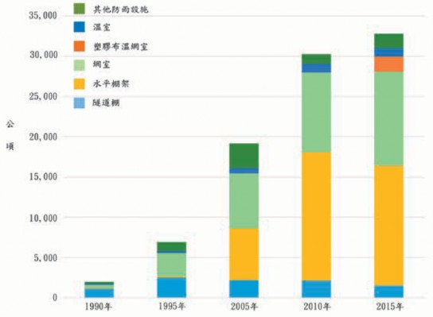
圖1.1 台灣歷年各類設施栽培面積的變動。(行政院主計總處，2018)

並改良園藝設施先進地區技術，用以蝴蝶蘭等高經濟作物生產的全環控精密溫室。在熱帶亞熱帶的氣候體驗下，因應作物品項、生長階段、經營目標與商業模式等，依使用目的與需求機能，各有發展對應的栽培設施型式，其應用現況於下一章節敘述。依據行政院主計總處1990～2015年的普查統計，各類栽培設施面積的變動趨勢如圖1.1，2005年後呈現大幅成長。於2015年設施栽培面積共達32,861公頃，各類設施所占面積比例如圖1.2，以栽培果樹及蔬菜的簡易水平棚架及網室為主要生產設施，設施建造成本較高的塑膠布溫網室及
溫室各為1,846及1,104公頃，合計僅約為設施總面積的9％。水平棚架及網室等簡易設施的應用，在台灣的農業生產雖有具體的助益，但面臨強風或豪雨侵襲，作物損傷或設施損壞的風險相對也高。為穩定蔬果生產，農政單位於2017年開始推動5年設施農業計畫，推廣加強型水平棚架網室，錏管塑膠布簡易溫室及結構型溫室等抗風性設施。另外氣候異常持續加劇，農民業者為能計畫性生產，及安全高品質產品的消費導向需求，對抗風性較高，能夠導入適當環控設備的錏管塑膠布溫網室或結構型溫室，使用意願也提高。除蔬果類外，原
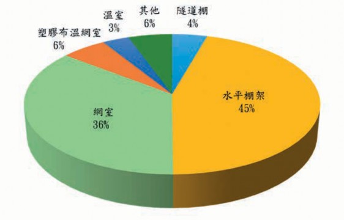
圖1.2 2015年台灣各類設施栽培面積比例。(行政院主計總處，2018)

本露天栽培的熱帶果樹，為防患病蟲害及氣象災害也逐漸走進設施栽培。綜合諸因素，今後溫室設置面積預估將快速增加，而在歷經40餘年發展過程的經驗累積，相較於高緯度地區溫室的應用概念，位於熱帶亞熱帶台灣的溫室，在結構安全、氣候環境與農業經營型態等方面，各具有差異的設計考量與應用狀況。
一、結構安全方面
相較於寒帶地區溫室以增加光線透光率，及積雪垂直荷重為結構設計著眼點，使用輕型鋼構材及玻璃被覆為主。在熱帶亞熱帶氣候地區，基於低成本考量，目前溫室大部分使用錏管構材及軟質塑膠布被覆，於颱風經年性發生的氣候中，溫室抗風安全性為基本要求，結構主要承受橫向風力荷重，如何在不增加過多成本，滿足室內作物光環境需求的前提，經由零組件的補強與改良，開發低成本耐候型溫室為發展方向。
二、氣候環境方面
相較於高緯度，低溫乾燥的大陸性氣候，使用大面積規模多連棟的溫室，內部氣候利用無遮光、高度環控的方式調整室內環境。於熱帶亞熱帶區域強日射、高溫高濕氣候型態，病蟲害多發生，多連棟大
面積的溫室內容易累積過多熱量與水氣，必須藉助困難達到的龐大通風量才能加以排除。於目前溫室環控設備尚未普及使用的情況下，如何運用台灣蝴蝶蘭溫室環控發展的經驗，建立適當經濟溫室面積規格，與遮光、通風裝置及室內循環扇等基本配備的應用模式，調節適當作物生理的氣候環境，提高溫室使用效率，邁向熱帶亞熱帶區域溫室全年性生產的方向發展。
三、農業經營型態方面
如荷蘭等園藝先進國家溫室，以農企業型態經營，大面積栽培管理作業，充分自動化降低生產成本，集中番茄或彩椒等少品項蔬果作物，較不重視風味，以追求產量為生產目標。蝴蝶蘭溫室以外，台灣熱帶亞熱帶型態的溫室，普遍為0.2～0.3公頃的小農經營，栽培作物從葉菜到瓜果類及果樹等多樣品項，產品因應消費導向著重外觀與風味品質。在農業經營型態的發展，除推動農企業的創設外，並須結合小農共同經營，資材與技術共購共享，以降低生產成本確保供銷通路。在生產面，掌握既有高品質關鍵栽培技術，發揮熱帶亞熱帶充足日照優勢，融入荷蘭等先進高產量栽培觀念技術，增進設施農業經營收益。


第二節 園藝設施應用現況
目前各基於結構安全性、內部環境或作物品目及其栽培管理型式等設計原點，開發出多種樣式的規格化溫室設施，從高度利用的精密溫室至單純利用的簡易設施，依所栽培作物品項或使用目的大致已具有其適用的設施模式；蘭花為使用精密玻璃溫室之主流，朝向溫室內部可導入各項環境控制與管理作業設備，進行高度精準栽培的方向發展。育苗場、高品質蔬果類生產或大規模花卉栽培，較常利用結構型塑膠布溫室，此類設施可於自然環境下，配合遮光網、水牆或高壓噴霧、室內循環風扇或熱風加溫機等環境控制設備，控制室內環境。上述溫室屬於具有固定基礎的永久性設施。此外，不具固定基礎的簡易錏管塑膠布溫室，使用機能與目的類同結構型塑膠布溫室，結構性較差，但因價格較低、產品規格化、施工容易，為目前設施園藝應用的主力設施。另在廣義的設施利用上，有葡萄、切花類等單純以隔絕外界降雨或保溫為目的的遮雨棚，南部地區洋香瓜促成栽培使用的隧道棚，及沿海地區西瓜苗栽種初期用以保溫、防風的霜傘。葉菜及果樹栽培的網室，浮動覆蓋、地面覆蓋等資材，充分利用資材物
理特性，達到雜草抑制、遮光、防蟲、避免雨水沖刷等目的，及調節作物生長空間環境等機能。此處介紹各類設施的使用狀況，而於本書後續溫室構造、環境控制等章節所敘述之內容，主要以狹義的園藝設施，結構型溫室及簡易型溫室為主。
一、地面覆蓋
地面覆蓋以防止土壤水分及肥料的流失、保持土壤的膨軟性、維持地溫及防止雜草孳生等為主要用途，於作物栽種畦面上直接覆蓋塑膠布之方法。地面覆蓋栽培所使用之塑膠布分有透明、白色、綠色、銀色及黑色等，於寒冷地區、季節利用透明塑膠布覆蓋，因可提高畦面白天土壤溫度，夜間維持地溫而有顯著促進作物生長之效果，但相對地面覆蓋下的環境也適宜雜草的生長，旺盛的雜草與栽培作物產生互相競取養水分之現象，故對一些長期性栽培的作物，如草莓等，為抑制雜草的生長採用不透光的黑色、綠色等著色塑膠布作地面覆蓋。使用著色塑膠布因具有不透光之性質，除用以抑制雜草並可防止夏天白天地溫過度的上升，但塑膠布外表面容易吸熱形成顯著高溫，作物葉片接觸後可
圖1.3 地面覆蓋塑膠布種類與目的
能造成燒傷現象。近來，塑膠原料內添加鋁粉劑或黏著鋁箔的銀色塑膠布普遍應用作為地面覆蓋之資材，利用其對光反射的效果，塑膠布吸熱量減少不致形成高溫現象外，對日照到達較少的作物下葉部位則因反射光而可增加活性。另外根據部分研究報告之結果，此反射光作用對某些蟲類也具有驅離效果，可防止病害的傳播。
台灣屬於多雨地區，土壤侵蝕及養分流失的問題甚多，早期利用地面覆蓋栽培的作物以草莓、果樹居多，近來蔬菜類的地面覆蓋栽培面積也有顯著增加的趨勢。利用地面覆蓋於保護土壤及保持養分方面能顯現出其功能外，土壤因地面覆蓋後水分不易蒸發，且溫度提高對肥料有促進分解之作用，作物對養水分的吸收也較為均暢，可減少灌溉水量及肥料的使用量。此外可避免下雨或灌溉時水滴掉落所產生的
土沙彈跳，不致造成作物葉片或果實污濁的情況，有減少病害發生的效果。
地面覆蓋塑膠布的畦面鋪設或使用後廢棄塑膠布的整收等均屬相當耗費勞力的作業，為取代傳統的人力作業，現已有地面覆蓋機械及塑膠布捲收機械可提供使用，配合具有塑膠布穿孔打洞功能的移植機則更可簡單的進行移植作業。伴隨著地面覆蓋栽培面積的增加，大量使用後廢棄塑膠布的處理也漸突顯成問題，基於環保需求，一些不致構成污染公害的資材，如燃燒後無危害氣體產生，或添加有機物等使於固定時間內自然分解生物分解性塑膠材料，或接受定量紫外線後自然風化的自然崩壞性塑膠材料的研發乃逐漸受到重視。
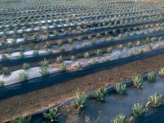 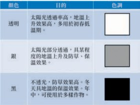

二、霜傘
霜傘的形狀類似三角帽，於開口側利用竹條或塑膠管彎曲成半圓插入土內作簡單支架，上方覆蓋塑膠布一邊固定於支架上，另一邊埋入土內作出苗的生長空間。另也有四端支撐，周圍覆蓋塑膠布或稻草，作成方筒形狀的利用形式。霜傘之主要目的在於防風、防寒與防霜，一般苗的移植愈早其收穫也能提早，於冬季的早期移植上對防霜的要求較大，在台灣西部沿海地區的瓜類促成栽培中，為避免強烈海風或低溫等不良天候對作物造成危害，苗定植時經常利用此類霜傘以保護作物。
冬季夜間若苗葉片直接暴露於大氣
中，因輻射冷卻之效應，從作物體不斷以輻射方式將熱量往寒冷的天空放射，形成作物體溫降低的現象。作物常因而導致葉溫低於氣溫而易造成寒害，若溫度持續降低產生結凍則易造成霜害。利用霜傘覆蓋，除可減少葉片的熱輻射外，也因空氣停滯在霜傘內而保留住部分的地熱及呼吸熱，可得到比外氣溫暖的環境，具有良好的防寒效果。而在覆蓋材料的方面，於作物進行光合作用之必要條件下，以選擇光合成有效波長透光性較佳，而熱輻射不易穿透之材質為原則。近來因塑膠布可簡單的取得與使用，霜傘栽培遂以利用塑膠布為主，但因塑膠布不具遮斷熱輻射的性
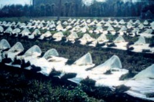
圖1.4 霜傘
質，在夜間氣候較為寒冷的時段，可利用稻草等長波不易穿透的資材覆蓋於塑膠布外表面上，用以減少土壤面或作物體的輻射熱損失，以達到霜傘栽培之目的。
三、浮動覆蓋
浮動覆蓋為利用不織布、寒冷紗或防蟲網等透氣性材料，直接覆蓋於作物葉面上方 (直覆式浮動覆蓋)，或利用簡單支撐與作物隔50～100cm之空間覆蓋 (懸掛式浮動覆蓋)，或於隧道棚支架上覆蓋 (隧道棚浮動覆蓋)，用以抑制過度高溫、防寒、防風、防蟲、防鳥、促進成育、減輕凍霜害等不同目的來保護作物之資材，而其使用目的及效果則因對象作物品目、覆蓋資材種類 (材質、遮光率及網目大小)、被覆時期、覆蓋方法及外部氣候環境等各有差異。浮動覆蓋利用資材的物理特性，低溫期夜間可減緩地面及葉片的輻射冷卻，能維持較高於外氣溫的地溫及葉溫；在高溫

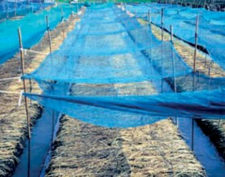
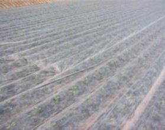
懸 掛 式 浮 動 覆 蓋 直 覆 式 浮 動 覆 蓋
圖1.5 浮動覆蓋
期於強日射下，作物體溫及地溫通常高於氣溫數℃，遮光可稍減少此數℃，在熱帶亞熱帶地區利用浮動覆蓋資材的遮光與通風性能，具有抑制溫度過度上升的效果。抑制溫度上升效果取決於資材的遮光率及通風性大小，資材通風性大，遮光率高，降溫效能較好，但過度遮光造成作物光合成減少，遮光率約在20～40％的範圍，對葉菜類栽培的增產量有正面的效益。另外使用網目較小的資材具有防蟲效果，在颱風期間利用浮動覆蓋，也可保護作物達到防颱功能。
浮動覆蓋資材因製造材料、方法等不同分有多樣種類，大致上可區分為割纖維或長纖維不織布、寒冷紗及化纖網等四大類。其中割纖維係將P VA 或PE塑膠布延伸、割成纖維後積層接著而成之資材，
孔隙率約為50％，顏色有透明、銀色、黑色等，一般使用透明顏色，光線透過率及耐久性均優於其他資材，價格也為浮動覆蓋資材中最昂貴者。長纖維不織布係使用 PET或PP為材料，將射出後的纖維積層加工成布狀之資材，重量輕富有柔軟性、價格便宜為主要之特徵。寒冷紗為乙烯或 PET等1條或2條以上的纖維編織成網狀之資材，孔隙率約為40～80％，因孔隙大小之不同其通氣性、透濕性、日射透過率及保溫性等各有相異。化纖網則為通常所稱之防蟲網，PET或PE之單條纖維以一定網目大小編織。
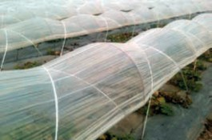
圖1.6 隧道棚
四、隧道棚
利用FRP或鋁、鐵條等作成拱形骨架，兩端直接插入土壤內，間隔約1m排列配置後，外部再用PE等軟質塑膠布覆蓋的設施稱為隧道棚。常見於台灣南部地區秋冬季洋香瓜栽培的保溫、防寒或防風、防雨等目的使用，也有用於蔬菜育苗或覆蓋防蟲網、不織布作有機栽培的事例，另為防止雜草或減少土壤水分蒸發，棚內通常搭配使用地面覆蓋。目前市售隧道棚產品有數種規格，洋香瓜一般使用3.4m的FRP或鋁、鐵條，插入土壤深度30cm，寬度 2m，高度80cm的拱架尺寸。利用隧道棚的栽培期間包括苗到收穫整體作期，在苗株較小的時期通常以密閉狀態進行栽培。利用白天的日光及土壤、苗的放熱及蒸發散可維持隧道棚內處於比較高溫、高濕的環境，可促進苗的成活與生育，又因塑膠布被覆隔離外界降雨、強風等不良天候，也有保持土壤鬆軟性、防止養分流失，減低
風害、乾害的效果。在作物光合作用原料 CO2方面，土壤內微生物呼吸作用所產生的CO2濃度可足夠供給小苗株之需求，而隨著苗的成長其上葉部位愈接近隧道棚頂部，此處溫度通常較外氣溫為高，致作物有蒙受高溫障害之慮，且密閉狀態下容易產生CO2不足的情況。於晝間須將隧道棚兩側開放進行通風以補充CO2，使內外空氣交換以防止棚內形成過度的高溫現象。此外在嚴冬的晴朗夜間，因輻射冷卻效應常發生棚內氣溫低於外氣的溫度逆轉現象，此情況有時也須將側面開啟以導入較高溫的外界空氣，圖謀氣溫、作物體溫的上升。
五、水平棚架
水平棚架使用鍍鋅鐵管或水泥柱等為支柱，上方再以鋼索或鐵管作橫向連結，主要用於蔓藤類的苦瓜、絲瓜等蔬果，及
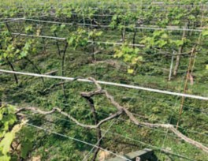
圖1.7 水平棚架

火龍果、葡萄、水梨或百香果等水果作物，提供枝葉攀爬支撐及垂吊果實的生育空間，藉由樹形的整枝具有葉片充分照射陽光、促進通風減少病蟲害、提高農作業性能等效益。此外，如文心蘭等花卉作物，利用水平棚架上方架設遮光網，用以調整光量，並透過遮光及通風，避免作物空間形成過度高溫的現象。
六、網室
台灣氣候溫暖，害蟲的繁殖與活動力均極旺盛，為維持農產品的外觀避免蟲害造成品質的降低，作物栽培期間農藥的施用為不可缺少之作業，而大量施用農藥不僅造成栽培成本的增加，對直接進行施藥作業的農民或間接食用的消費者也構成影響健康的問題。為減少農藥的使用量，近來於國內主要蔬菜產區，如雲林西螺、二崙，彰化永靖等地區的葉菜類栽培普遍利用網室進行生產。基本上網室屬於浮動覆蓋的升級應用，採用2～3英吋的鍍鋅鐵管搭建高約3m的水平棚架後於四周側壁、
品名 | 孔（隙—率）μ | （網㎜目）δ | （線㎜徑）d | 顏色 |
表1.1 台灣常用防蟲網規格
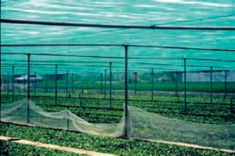
圖1.8 蔬菜網室
屋頂全面再覆蓋防蟲網的栽培設施，主要用以防止蟲害及減少農藥灑佈次數。而防蟲網有種種不同規格之網目大小、線徑粗細，各具不同之遮光率及孔隙率，台灣地區所使用防蟲網規格如表1.1，其中葉菜網室以16×16 (1英吋的長度及寬度內編織16條纖維) 綠色防蟲網，木瓜網室32×32白色防蟲網為較常使用的規格。
網室選擇適度遮光、通氣的防蟲網覆蓋，除具有物理性防治蟲害之功效外，並可發揮若干的遮光、保溫及保濕性能，此外對防止雨水直接衝擊作物表面避免造成物理傷害，及防止風害、霜害或形成過度高熱現象上均有所助益。而防蟲網覆蓋下
16×16 0.76 1.59 0.20 透 明 、 綠 、 白
24×24 | 0.67 | 1.06 | 0.19 | 透明、綠、白 |
32×32 | 0.62 | 0.79 | 0.17 | 透明、白 |
所造成的作物生長空間環境，介於裸地及溫室之間，藉由資材間相異遮光率及孔隙率的組合，可將網室下作物生長空間的環境從接近露天之狀態，大幅調整至接近溫室環境的狀態。但若使用網目過細的防蟲網，於網室內部則易形成高溫現象，且光線的透過率較差，抗風性變弱，支撐棚架結構也須加強，在網目大小的選用上，考慮防治蟲類體型難以侵入下，盡可能選用網目較大、通氣性良好的防蟲網使用。
比較於浮動層覆蓋，網室屬於長期使用的設施，且因有足夠的高度而具有良好的作業性，並有於網室內部設置灌溉設備或其他作業機械以提高作業效率之例。另外，其他網室設施有木瓜、熱帶水果網室及花卉作物的遮蔭網室等，木瓜網室採用白色防蟲網覆蓋，以防治芽蟲傳播輪點病害為目的。近來對芒果、印度棗等熱帶水果也積極推廣網室栽培，除利用網室的環境調節功能外，同時達到防颱、防鳥及防治果實蠅等目的。另外遮蔭網室則以防止強日照為主要目的，利用遮光網遮斷部分光量以栽培弱光性作物，或室內作物之馴化等。
七、遮雨棚
單有屋頂部分覆蓋被覆資材其側壁四周則為開放式的設施稱為遮雨棚，早期
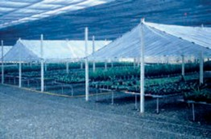
圖1.9 遮雨棚
常採用水泥柱為支柱，近來以使用錏管為主。此類設施的主要目的為隔離外界降雨，避免雨水導致土壤形成過濕現象以進行適當的水分管理，且因四周均為開放，通風良好可維持類似於外氣之溫濕度、 CO2濃度狀態。台灣夏作，通常為雨量較多的時節，利用遮雨棚栽培除可提高作業性外，因被覆之效果如果菜類、葡萄等可延長收穫期，減少異常果、裂果或病害的發生；對花卉因雨水產生之花腐現象也有良好的防止效果。
八、錏管塑膠布簡易型溫室
錏管塑膠布簡易型溫室 (以下通稱簡易型溫室) 以小尺寸的鍍鋅鐵管為主要構件，依設計的溫室規格彎曲加工後，左右2根鍍鋅鐵管於中央頂部以連節套環連結，下端直管部分直接插入地下構成一組骨架，以50～60cm間隔配置一組，桁條方向再以直管固定。桁架方向的直管一般於

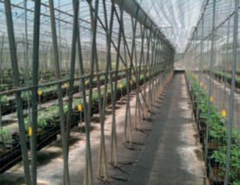
圖1.10 簡易型溫室
頂部、兩肩部及兩腳部等5處所固定，插入地下之直管深度約為30cm，土質軟弱地帶插入深度則須於40cm以上。鍍鋅鐵管間的連繫部位均以專用彈簧夾固定，全體骨架完成後於外部被覆塑膠布，再利用FRP塑膠夾固定塑膠布，最後於錏管溫室兩側邊 10～15cm處埋設簡易固定椿，骨架間的塑膠布以固定帶押緊後結束於固定椿，即完成錏管塑膠布溫室之搭建作業。錏管塑膠布溫室一般棟高3～4m，跨距4～6m，有多種規格化產品可供選用，具有可自行施工簡單的組合、不使用時可自由拆解、保管便利、建造成本相對便宜等優點，目前使用錏管塑膠布溫室的比率占栽培設施面積的大半以上，為國內園藝生產的主力。應用上可採單棟方式，現況於大面積的栽培趨勢下多採用連棟型式；此類設施主要利用自然通風調節室內環境，兩側面利用捲揚裝置捲起塑膠布操控開口面積大小，
因應環境變化調整通風量，另屋頂部可附加裝天窗，以促進通風。在室內也可配備遮光、循環扇、高壓噴霧及熱風加溫機等較不影響結構安全的環境控制設備。被覆資材使用軟質塑膠布，早期使用PVC塑膠布，雖價格便宜但有容易附著灰塵、透光性隨使用期間逐漸降低、老化快使用年限短每1～2年須更新，及廢棄後不易處理等缺點。近來改用PE或PO系列等透光性較好、耐久性較佳的塑膠布，另有防塵、防滴處理或紫外線隔離、散射光等特殊需求機能性塑膠布。錏管塑膠布溫室因不具固定基礎，整體結構抗風強度較差，在熱帶亞熱帶地區，颱風期間頻繁發生遭受破壞的案例，建造時可考量溫室周圍地形地貌可能造成的風向，對溫室施行局部補強以增加抗風性能。
九、結構型溫室
以鋼骨樑、柱及鋼材或錏管構件屋面作為骨架模組，側樑結構加強，具有固定基礎的設施。屋面有山型、圓形或單斜背等幾何形狀，山型屋面溫室外部一般以玻璃或硬質板被覆；其他形狀屋面通常使用軟質塑膠布，四周再以塑膠布被覆。依被覆材料區分，玻璃被覆稱為玻璃溫室，以塑膠布被覆稱為塑膠布溫室。荷蘭Venlo玻璃溫室為山型屋面的代表性溫室，屋面
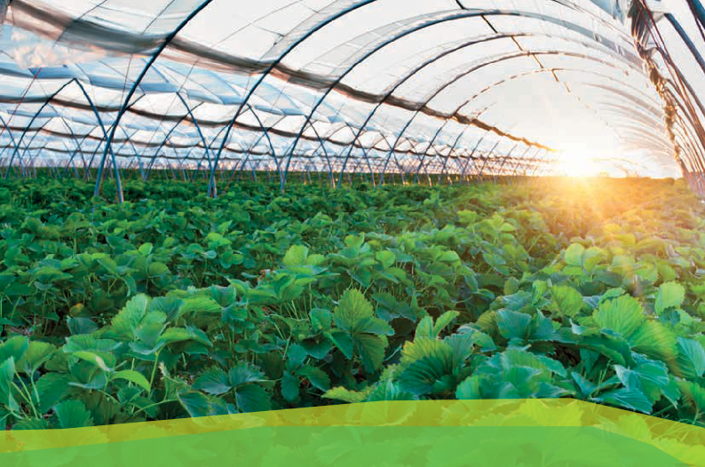
採用小尺寸構材，透光性佳，及非連續式天窗交錯配置，通風性好為其主要特徵。國內於1980年代引進，但於熱帶亞熱帶地區，產生高溫期水牆設備降溫效果差，颱風期天窗因強風變形導致漏水等問題，經增裝遮光設備，捨棄天窗採全密閉環控改良後，目前廣泛應用於蝴蝶蘭栽培。玻璃溫室價格昂貴，為降低建造成本以塑膠布取代玻璃，分別從結構安全、通風環境等設計考量，目前也有圓形屋頂或單斜背等多種樣式的結構型塑膠布溫室商品。結構型溫室抗風強度大，柱高較高具有良好作業性，容易吊掛灌溉、搬運等自動化管理設備，及方便農機具的出入，大面積栽培
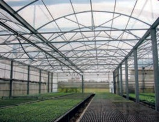
圖1.11 結構型溫室
的花卉、育苗場或高經濟性的小番茄、洋香瓜或蘆筍等蔬果作物多採用此類設施，近年來因抗風強度的需求，密閉性高可導入各項環境控制設備，結構型塑膠布溫室設置面積有逐年增加的趨勢。